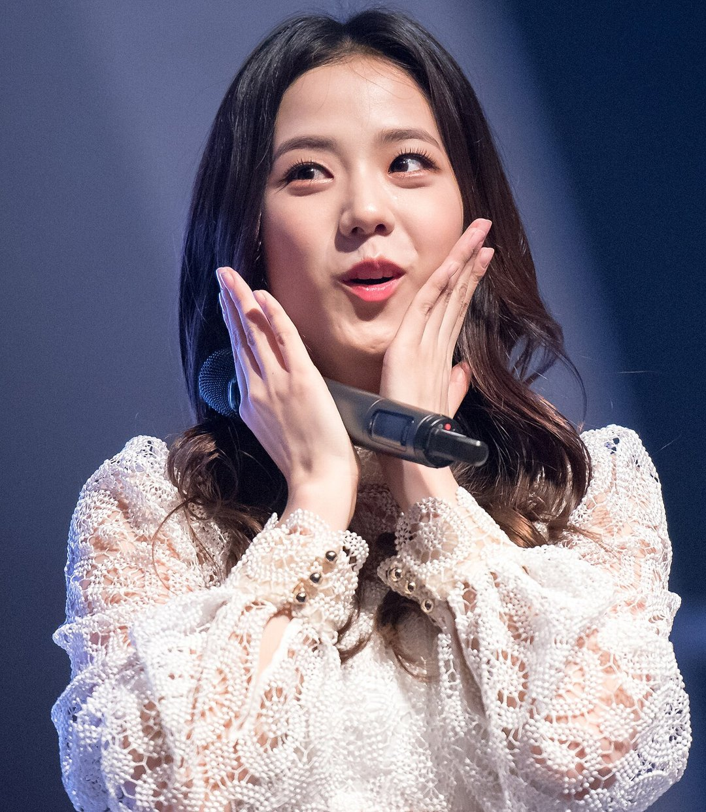

"요즘이 제일 풍족한 시기"라던 냉장고 문이 열리자 셰프들이 먼저 당황했어요. 8일 JTBC '냉장고를 부탁해'에 나온 블랙핑크 지수 이야기예요. 지수 냉장고에서 실제로 나온 재료와 화제가 된 말, 그리고 같은 주말 음악방송 무대까지 한 번에 정리했어요.
📷 사진 1 자리
▲ 사진: D4Cgrapher / CC BY 4.0 / 위키미디어 공용
텅 빈 칸에서 나온 이모표 비빔장
혼자 사는 지수의 냉장고는 생각보다 비어 있었어요. 지수는 평소엔 물과 과일만 있을 때가 많아서 지금이 오히려 가장 많은 때라고 설명했어요. 칸마다 눈에 띈 건 배달 음식을 시키고 모아 둔 소스들이었죠.
그중 따로 이야기가 길어진 재료는 이모가 만든 청양고추 비빔장이에요. 직접 키운 청양고추로 만든 장인데, 지수 본인은 맵지 않았지만 다들 맵다고 하더라는 설명이 붙었어요. 이 재료들로 셰프들의 15분 요리 대결이 이어졌어요.
JTBC 공식 클립에는 김풍 셰프가 마라 풍추기름까지 꺼내 든 장면이 따로 올라와 있어요. 매운맛에 자신 있다던 지수도 당황했다는 장면이에요.
▶ 영상 1 자리
매운맛은 자신 있고, 디저트는 밥과 동시에
매운 음식 이야기에서 지수는 꽤 단호했어요. 이름난 매운 떡볶이도 전혀 맵지 않다고 했고, 블랙핑크 다른 멤버들의 입맛은 '태아 입맛'이라고 불렀어요.
디저트 사랑은 그보다 더했어요. 밥을 먹는 중에 바로 디저트를 주문할 정도라는 말에, 안정환이 맵고 단 걸 연달아 먹으면 몸에 좋지 않다고 거들었어요. 지수의 답은 짧았어요. "몸이 썩는 지름길"이라며 순순히 인정한 거예요.
두바이 와플 대신 고른 것
요즘 지수가 빠진 디저트는 와플이에요. 두바이 재료가 들어가면 값이 확 뛰어서 평소엔 일반 와플을 시키고, 그렇게 아낀 돈은 게임 결제에 쓴다고 털어놨어요.
이 대화에는 함께 출연한 에이티즈 산도 끼었어요. 스프레드를 따로 사서 생크림 와플에 듬뿍 발라 먹으면 된다는 게 산의 방법이에요. JTBC 공식 클립 '두바이 와플 먹는 법' 편에 이 장면이 담겼고, 정호영 셰프가 '블랙핑크 제5의 멤버'로 인정받은 장면도 따로 클립으로 나와 있어요.
▶ 영상 2 자리
7일 음악중심, 8일 인기가요
이번 주말 지수를 볼 수 있던 곳은 냉부해만이 아니었어요. 7일 MBC '쇼! 음악중심'과 8일 SBS '인기가요'에서 'ADDICTED' 무대를 했고, 두 방송사 공식 채널에 무대 영상이 올라와 있어요.
▶ 영상 3 자리
날짜를 맞춰 보면 8일 하루에 음악방송 무대와 냉장고 공개가 함께 나간 셈이에요. 예능 속 모습과 무대 위 모습을 같은 날 비교해 볼 수 있어요.
정리하면서 가장 눈에 띈 건 날짜였어요. 거의 비어 있던 냉장고와 'ADDICTED' 무대가 같은 8일에 나란히 공개됐거든요. 냉부해로 지수를 먼저 봤다면 인기가요 무대를, 무대를 먼저 봤다면 와플 클립을 이어 보길 권해요.
지수 냉장고의 대표 재료는 이모표 청양고추 비빔장과 배달 소스였어요. 냉부해 장면은 JTBC Voyage, 'ADDICTED' 무대는 MBCkpop과 SBSKPOP X INKIGAYO 공식 유튜브 채널에서 다시 볼 수 있어요.
